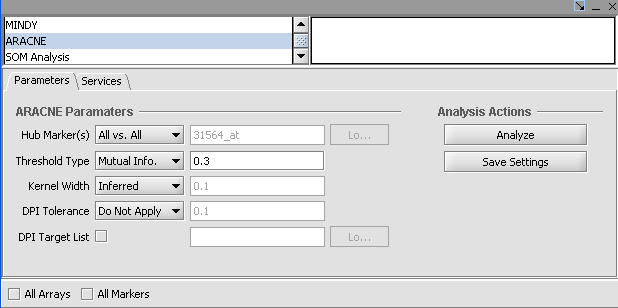

Jmol is a software tool for the visualization of view 3D molecular structures that has been adapted to work as a component of geWorkbench. This component is located in the Visual Area in the upper right of the application. A full description of the capabilities and functionality of Jmol can be found at (http://jmol.sourceforge.net/ ).
1. Load a .pdb file into a Project folder.
2. Navigate to the JMOL image viewer in the Visual Area of the application.
3. (optional) Right click on the image to modify the molecular structure display. For details on the display options, Jmol documention can be found at (http://jmol.sourceforge.net/ ).
